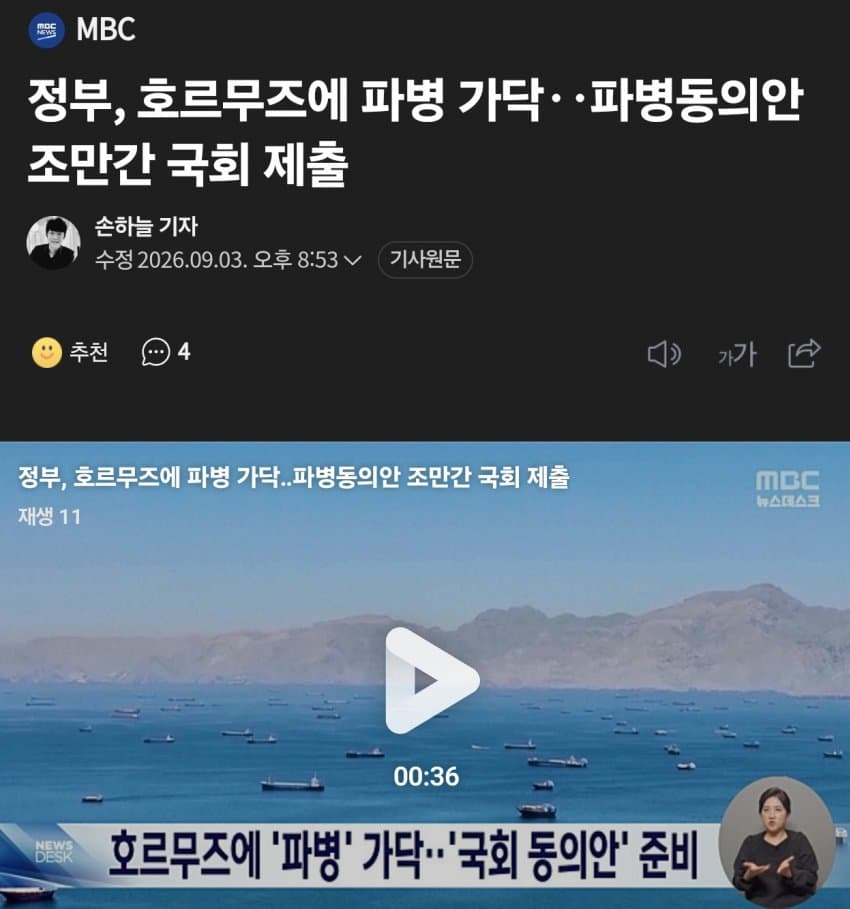

https://tmapapi.tmapmobility.com/main.html#androidEDCSDK/guide/androidGuide.sample1
애미뒤진 노머고 좆럼프년 빠는 새끼들 이래도 있냐?
적어도 월남전은 통킹만 주작이라도 쳐서 명분이라도 그럴듯했는데 이번 미이전은 대체 왜 가야하는거임?

https://tmapapi.tmapmobility.com/main.html#androidEDCSDK/guide/androidGuide.sample1
애미뒤진 노머고 좆럼프년 빠는 새끼들 이래도 있냐?
적어도 월남전은 통킹만 주작이라도 쳐서 명분이라도 그럴듯했는데 이번 미이전은 대체 왜 가야하는거임?
https://www.yna.co.kr/view/AKR20260903180200001?input=tw
정부는 기사 내용 사실과 다르며 결정된 바 없데요
저거 국회에서 걍 거부하거나 재검토만 무한 반복하면서 시간끌면 될거같은데 ㅋㅋㅋ
파병 안해준다고 반도체 관세, 훈련 축소
ㅇㅈㄹ 하니까 액션만 까는거지
파병 한다고 쳐도 미해군도 쉽게 못들어가는 해역에서 한국군이 뭘 할수있는데? 시발 좆럼프야 ㅋㅋ
근데 ㄹㅇ 미국이 얼마나 좆같이 굴면서 땡깡질을 한걸까 명분도 없는 개지랄을 병먹금을 못하네... 트럼프가 빨리 뒤져야할텐데 부통령 밴스가 차라리 정상인같더라
저걸 딴나라랑 묶어서 연합군 형식으로 가야지 단독으로는 독박쓴다
넷에서 전쟁 찬양하는건 ㄹㅇ 참여할일 없는 틀딱들뿐임
그럴거 같지?
하... 우리나라 젊은청년들 진짜 너무 불쌍하다...
이제와서 무슨 파병이야. 진작 끝내야할걸 질질끌고있는 전쟁인데.
고려만해라.
미국이 이란을 왜 떄리는지도 의아한 전쟁이다.
네타냐후한테 크게 책잡혀서 트럼프가 미친짓하는거에
따라가지마라. 어차피 트럼프도 제 명 다 못채우고 죽을꺼라 시간만 끌어라
병력 후송 도중 미국이란 종전 협정.. 병력 한국으로 귀항.
이틀 뒤 미국이란 전쟁 재개 한국 병력 파병..
또 이틀 뒤 종전 협정
여러가지를 고려해서 내린 결정같아 보이네
힘이 없네..에효.. 최대한 질질질질 끌어야지 어쩌겠노
고려? 조선하면 안되는거임???
월남은 청년들 갈아넣어서 달러라도 엄청 벌기라도 했지. 그만큼 국익에 도움도 안되는데 네타냐후x트럼프 개인의 원한과 목적이 뻔히 보이는 이딴 ㅂㅅ전에 파병한다고?? 나라 꼴 ㅋㅋㅋㅋㅋㅋㅋㅋ
미국 압박에 쇼하는거여라
국회에서 막히면 미국도 압박할 명분이 없어지겠지
지상군 아니고 군수지원함 정도 보내는건 가능하다고 생각된다. 직접 전투하거나 피격위험 없는 후방지원정도 하고 좃럼프새끼 징징거리지 못하게 해야지.
해협 계속 막히면 결국 연합군 결성될 거라더니 그런 시점이 온 건가
해군 보내겠지. 무사히만 돌아와라
미국 주도 힘없는나라들 동맹군 보내겠지 유럽은 안보내거나 생색만 내는 수준이겠고.. 한국 일본 호주 등등....
아들부시 이라크 수순 밟는 구만 의미없는 전쟁을 미국이 벌이고 주요국이 억지로 파병하고
이번에 장금상선 처맞앗잖아 그거때문인듯 공격보단 보호겟지?
K빠가새끼들 반응이 존나 궁금함. 지들이 빠는 좆럼프가 해달라는대로 해줘서 이거 잘했다고 칭찬할지 아니면 아묻따 정부 욕하고 싶으니까 욕할지
후자일거같긴하다 ㅋㅋ
우리가 파병하면 뭐할건데 미군 자체가 육군 투입을 안하는데 뭔 시발